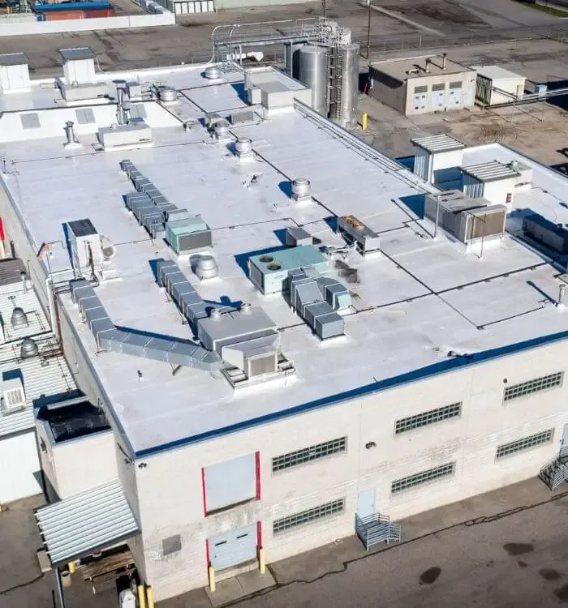

Roofer In Evanston, Wyoming
About Evanston
Evanston, Wyoming, is a small city with a lot of heart—set against a backdrop of rolling hills, wide-open skies, and easy access to outdoor adventure. Located just over the Utah border, Evanston is known for its close-knit community, historic charm, and a slower pace of life that many find refreshing. Whether you’re enjoying a walk along the Bear River Greenway, exploring the Uinta Mountains, or just soaking in the views from your front porch, Evanston offers a unique blend of rugged beauty and hometown comfort. At Pioneer Roofing, we’re proud to serve homeowners and businesses in this one-of-a-kind community with reliable roofing solutions built for the local climate and lifestyle.
Residential Roofing In Evanston
Living in Evanston means facing all four seasons—and sometimes all in the same week. From heavy snowfall and icy winds in the winter to sun-soaked summer days and strong spring gusts, your home’s roof goes through a lot. That’s why it’s important to work with a roofing company that understands the unique weather patterns of southwest Wyoming. At Pioneer Roofing, we specialize in residential roofing solutions that stand up to Evanston’s climate. Whether you need a quick fix or a full replacement, we’ll help you choose durable materials that keep your home protected, energy-efficient, and ready for whatever the weather brings.


Commercial Roofing In Evanston
For businesses in Evanston, a strong, dependable roof isn’t just a necessity—it’s peace of mind. The region’s shifting weather and long winters can wear down commercial roofs quickly if they’re not built or maintained properly. At Pioneer Roofing, we work closely with local business owners to provide smart, long-lasting roofing options that make sense for your building and your budget. Whether it’s a small shop downtown, a warehouse, or an office building, we handle everything from emergency repairs to full installations. With our experience and commitment to quality, you can trust that your business is covered—no matter what the Wyoming weather throws your way.
Book Appointment Book Appointment